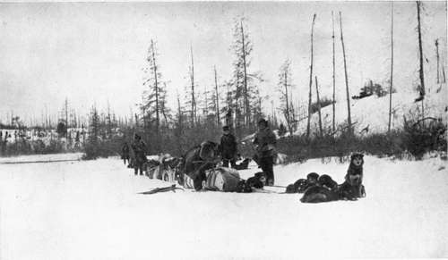

Chapter IX. Leaving The Lone Land
Description
This section is from the book "Wild Life In Canada", by Angus Buchanan. Also available from Amazon: Wild Life in Canada.
Chapter IX. Leaving The Lone Land
" The winter ! the brightness that blinds you,
The white land locked tight as a drum, The cold fear that follows and finds you,
The silence that bludgeons you dumb. The snows that are older than history,
The woods where the weird shadows slant; The Stillness, the moonlight, the mystery-
I've bade 'em good-bye-but I can't."
Robebt W. Service.1
It was with many such feelings that I turned finally into the South to depart from the strange North land that was so desperately stern in its character of wild overwhelming vastness and rigour of elements, although forever alluringly attractive withal.
Unsettled in my ambition to go on by the news of my country involved in war-which had, perchance, come to me through a trapper about a month before-and by food problems confronting me at the edge of the Barren Grounds- which would take months, if not longer, to overcome-I had, on November 29, when I and my two Indian companions were out of food and losing our dogs and our courage, turned at the edge of the Barren Grounds, and regretfully abandoned the fond hope that I had entertained of spending the following summer right over on the Arctic coast.
1 In The Songs of a Sour-Dough, by Robert W. Service.
Dogs Besting- South Of Theitaga Lake: Trailing From The Barren Grounds.
Note timber growth near to the " land of little sticks."
Two entries in my diary at this date refer to the condition of my dogs :
November 28
Snowstorm all day drifting wickedly on a strong east-wind blizzard. Onward throughout the day, crouching like distressed animals, we fought our way ahead over shelterless lakes. Peesu, one of my dogs, will not eat to-night, so utterly done-up is the poor brute. He lies in his lair in the snow, unwilling even to raise his head. I finally coaxed him to swallow a few tit-bits of dried meat ere turning in to sleep.
November 30
Off on the trail at daylight. Meadowsteuce-my lead-dog-dying, and had to be destroyed before leaving. Peesu somewhat recovered, but he, and Musquaw, and Whisky are all lame. I have but one sound dog. Travelling in yesterday's blizzard was too much for them. Some of the Indians' dogs are exhausted also."
I fancy no one cares to give up and admit a total, or certain amount of, defeat in the midst of furthering a big enterprise ; it is indeed heartbreaking to do so : and yet one can be so overwhelmed by circumstances that it becomes foolish to go on, and wise to bow to the grim hand of Fate.
Though there were difficulties lying before me on the foodless, snow-covered wastes of the Barren Grounds, these were possible to surmount in time, but I could in no way, in this land where one has plenty of opportunity to think, and where one's thoughts are prone to probe one's conscience, justify the continuance of a personal ambition while I knew my country had need for my service, and kinsfolk expected my homecoming to rally to the Flag.
Therefore, abandoning further-north travel as I have said, I returned reluctantly to my base-cabin north of Fort Du Brochet and stayed in that neighbourhood until Christmas in the forlorn hope that the yearly Christmas packet, due from the south at that date, might contain some more favourable news of the War ; hoping even that the astonishing storm of arms which had so quickly risen, had as quickly subsided-perhaps even ceased.
Vain, unnoticed hope !-doomed to be utterly wrecked as wave upon wave grew upon the rising tide of warfare, and engulfed every other thought or desire; its vast upheaval searching even to the far-distant doorstep of my log-cabin to find therein a victim.
Christmas came, but with it no packet; strange, unheard of delinquency that bore gravity to the hearts of the trader and the mission priest at the Fort. " There must be something seriously wrong," they thought, and, most dreadful thought of all, " Could war possibly be going ill with our country ? "
We gathered in grave consultation hour after hour, and our one topic was war ; trapping, fur-trading, religion, had ruthlessly gone by the board. Hours were spent in conjecture; ideas constructed from our slim store of early war news; hopes and forebodings voiced of sheer imagination; but from all it was not in our power to raise one single conviction of comforting reliable substance-we were beyond the voice of our kind ; conjecture as we might, there could be no answer, unless the vast snow waste was pierced, and jingling, joyful sled-bells should herald the packet from the south.
Each day we watched over the sea of lake ice to the south, each night sealed down the envelope of another span of expectancy and disappointment.
From the 23rd to the 27th I had waited at the Fort; on the night of December 27, which was a Sunday, I made final preparations to go-no hope of the packet remained, no gladsome transformation to justify my staying on and a renewal of north travel.
On the morning of the 28th a group of natives gathered about the sleds as we harnessed up.
JTierre and Mistewgoso were to accompany me to Pelican Narrows, which was a post in touch with Cumberland House on the Sturgeon-weir River Route, which, in turn, was not very far from The Pas, which terminated the newly projected Hudson Bay Railway. They were to drive two dog-sleds loaded with specimens: chiefly Caribou, Barren-ground Wolves, and Foxes, for most of the bird-skins collected had previously been sent south by arrangement with the Fur-trader.
With warm hand-shake I bade good-bye to the untrammelled, upright redskin children of the wild who were standing almost shyly about on the snow to wish me bon voyage and au revoir, for all had told me they hoped I would some day come again amongst them. It was a somewhat touching farewell to me, for it bore the final goodwill of rude men, not easy of approach, who had come to acknowledge me their friend, and theirs was friendship I valued. Only a day or two before the priest at the Fort had taken upon himself the task of telling me of the feeling of the Indians toward the white stranger. He had summed up his kindly meant remarks with : " If at any time you come back to this territory, you will have many friends among the natives ready to help you in your work, and glad to go with you on the trail, for they feel you are as one of them, and they understand and trust you-all say the same, and they are quick to distinguish." Who would not feel, who had lived among a strange race, touched and deeply grateful for such acknowledgment of comradeship ?
Continue to: